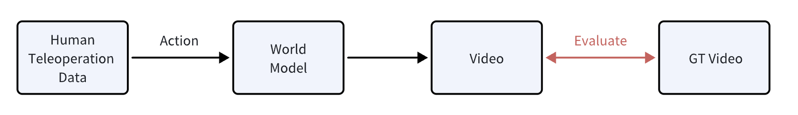
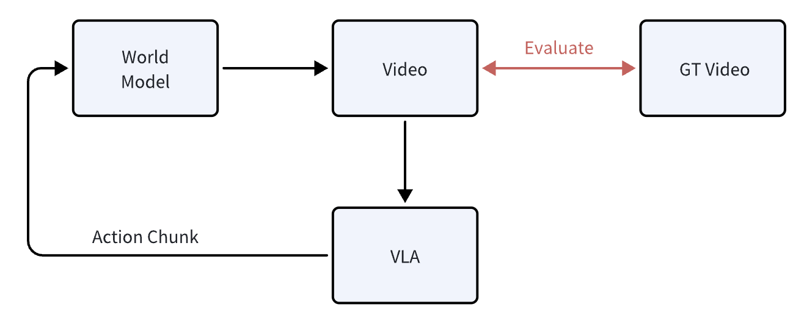

Overview 总体介绍
This track hosts a World Model competition to evaluate the capability of World Models as VLA evaluators. Participants train a model on the provided training set, generate videos on the test set, and submit generated videos to Huggingface. We evaluate submissions and publish scores and rankings on the leaderboard.
本赛道举办 World Model 比赛，核心目标是评测“世界模型作为 VLA evaluator”的能力。参赛队伍使用我们提供的训练集训练模型，在测试集上生成视频，并将生成结果提交至 Huggingface。我们会在本地完成评测并更新 leaderboard 的分数与排名。
Step-by-step Guidance 参赛步骤
Step 1. Get the dataset 步骤 1：获取数据
Dataset: 数据集链接： open-gigaai/CVPR2026_WorldModel_Track
- To access the dataset, teams must sign the data access agreement and provide team information.
- Team information includes: team name; and member list (name, affiliation, email).
- 获取数据前需要签署数据获取协议，并填写队伍资料。
- 队伍资料包括：队伍名称；参赛人员信息（姓名、单位、邮箱）。
Step 2. Baseline & evaluation 步骤 2：Baseline 与评测
We provide a reference baseline (GigaWorld-1) and an end-to-end evaluation pipeline. Start from the baseline to reproduce results, then iterate on your world model. Baseline & evaluation code: open-gigaai/CVPR-2026-Workshop-WM-Track.
我们提供 GigaWorld-1 的 baseline 与端到端评测流程代码。建议先跑通 baseline 复现实验流程，再逐步迭代你的世界模型。 Baseline & 评测代码：open-gigaai/CVPR-2026-Workshop-WM-Track。
We compute the difference between generated videos and ground-truth videos using a predefined metric suite. References: WorldArena, PBench.
我们会使用给定的指标体系计算生成视频与 GT 视频之间的差异。参考：WorldArena、PBench。

World models are expected to support action-to-video generation. Actions come from human teleoperation trajectories (typically 300–1000 steps). Autoregressive generation is allowed; the generated video length must match the GT video length.
我们要求世界模型具备 action-to-video 的生成能力。action 来自人工遥操轨迹（通常为 300–1000 步）。可采用自回归（autoregressive）等生成策略；需保证生成视频长度与对应 GT 视频长度一致。
This metric evaluates the capability of a World Model to serve as a VLA evaluator. Reference: Evaluating Gemini Robotics Policies in a Veo World Simulator.
该指标用于评测世界模型作为 VLA 评测器（evaluator）的能力。参考：Evaluating Gemini Robotics Policies in a Veo World Simulator。

World models are expected to support action-to-video generation, where actions come from VLA rollouts. Participants can decide how many rollouts to run; for each rollout episode, generate a complete video (success or failure).
我们要求世界模型具备 action-to-video 的生成能力，其中 action 来自 VLA rollout。rollout 次数由参赛者自行决定；对每条 rollout 需要生成完整的视频序列（无论最终失败或成功）。
Step 3. Submission & leaderboard 步骤 3：提交与榜单
Submit your generated videos for the test set via Hugging Face. We will evaluate submissions and update the leaderboard in three rounds.
参赛者仅通过 Hugging Face 提交 test set 的生成视频。我们会组织评测，并在三个 round 中更新 leaderboard。
- To reduce the risk of test-set hacking/overfitting, we provide 3 evaluation rounds.
- Only your best score across all rounds will be kept as the final score.
- 为降低 test set 被 hack/过拟合的风险，我们提供 3 次评测机会（3 个 round）。
- 最终成绩仅保留你在所有 round 中的最高分。
- Submit videos and track ranking updates. 提交视频并跟踪榜单更新。
- Final score keeps your best round. 最终成绩取三轮最高分。
All timestamps below are in UTC. 以下时间均为 UTC（全球统一时区）。